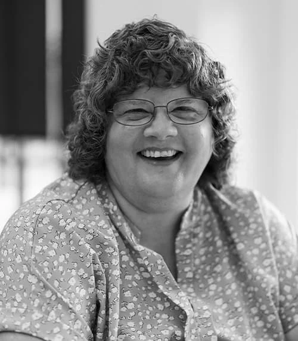
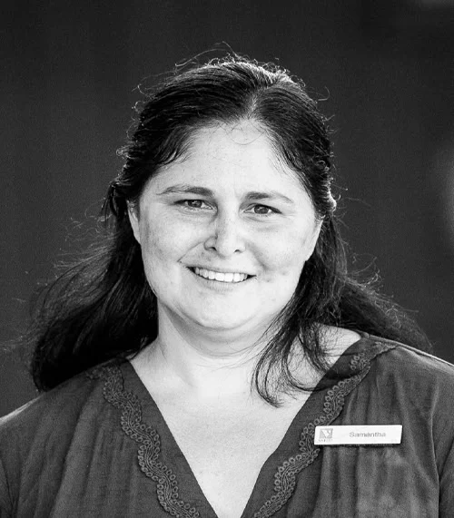

Portrait series · 2024–2026
Consistent enough for a system. Human enough to remember.
I photographed leadership, board members, and staff for EastRise, Blue Cross Vermont, and CBSS. The framing stays consistent without asking every person to look the same.
76 portraits across two organizational series.
EastRise leadership and board
45 publicly used and approved portrait selections.








Blue Cross Vermont and CBSS
31 publicly used and approved portrait selections.


The system behind the portraits
The work included repeatable lighting and framing, careful editing, and enough variation for each person to look like themselves rather than a template.